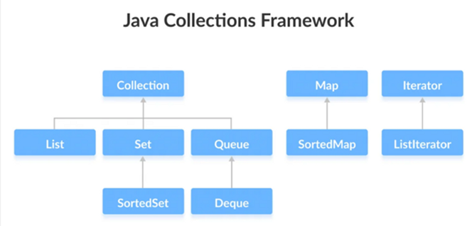

Colecciones y Genericidad en Java
Introducción a las Colecciones
Una colección es un objeto que agrupa otros objetos (llamados elementos).
Por ejemplo, una lista de estudiantes, un conjunto de DNIs o un mapa de claves y valores.
El marco de colecciones ofrece:
- Interfaces que definen los tipos de colecciones (por ejemplo,
List,Set,Map). - Clases concretas que implementan esas interfaces (
ArrayList,HashSet,HashMap, etc.). - Algoritmos genéricos (en la clase
Collections) para ordenar, buscar, mezclar, etc.
Estructura del Java Collections Framework
Collection (interfaz raíz)
├── List → Elementos ordenados, permiten duplicados
│ ├── ArrayList
│ ├── LinkedList
│ └── Vector / Stack
│
├── Set → No permite duplicados
│ ├── HashSet
│ ├── LinkedHashSet
│ └── TreeSet
│
└── Queue → Orden basada en prioridad o FIFO
├── PriorityQueue
└── ArrayDeque
Map (interfaz separada, no hereda de Collection)
├── HashMap
├── LinkedHashMap
└── TreeMap

Esquema básico del Java Collection Framework
Genericidad en Java
Los genéricos son un mecanismo del lenguaje que permite definir clases, interfaces y métodos que operan sobre tipos de datos parametrizados, es decir, sin especificar el tipo concreto hasta su uso.
Los genéricos proporcionan seguridad de tipos y reutilización de código:
se define una estructura general (por ejemplo, una lista) que puede almacenar distintos tipos de datos de forma segura.
Ejemplo:
List<String> nombres = new ArrayList<>();
nombres.add("Ana");
// nombres.add(3); // ❌ error en compilación
String nombre = nombres.get(0); // ✅ sin necesidad de casting
Ventajas
- Mayor seguridad de tipos: evita errores en tiempo de ejecución.
- Elimina conversiones con
Object. - Permite reutilizar código con distintos tipos.
Definición de una Clase Genérica
public class Caja<T> {
private T contenido;
public void setContenido(T contenido) {
this.contenido = contenido;
}
public T getContenido() {
return contenido;
}
}
Uso:
Caja<String> caja1 = new Caja<>();
caja1.setContenido("Hola mundo");
Caja<Integer> caja2 = new Caja<>();
caja2.setContenido(42);
Parámetros de tipo comunes
| Símbolo | Significado |
|---|---|
T |
Tipo genérico (Type) |
E |
Elemento (Element) |
K |
Clave (Key) |
V |
Valor (Value) |
N |
Número (Number) |
Genéricos con restricciones (bounded types)
Permiten limitar el tipo de datos que puede usarse:
public <T extends Number> void mostrar(T num) {
System.out.println(num.doubleValue());
}
✅ Acepta: Integer, Double, Float
❌ No acepta: String
Comodines (wildcards)
Los comodines (?) permiten flexibilidad en el tipo genérico:
List<? extends Number> listaNumeros; // acepta List<Integer>, List<Double>, etc.
List<? super Integer> listaEnteros; // acepta List<Integer>, List<Number>, List<Object>